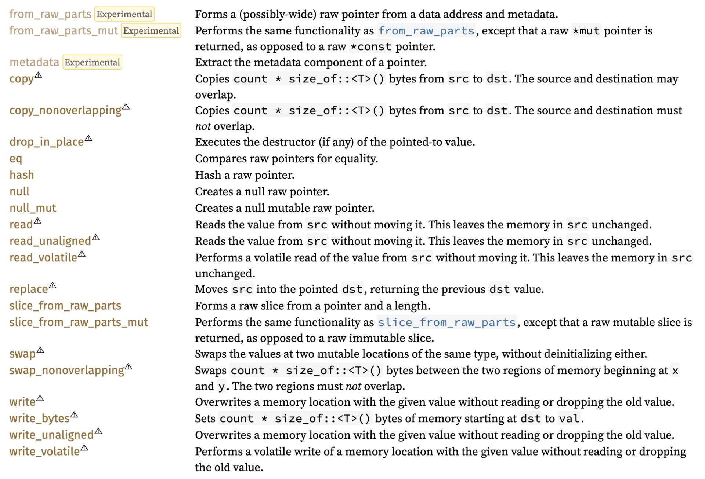
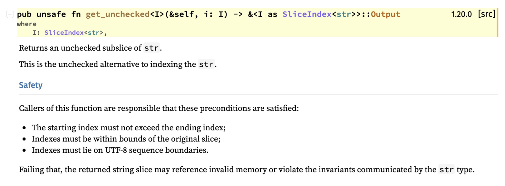
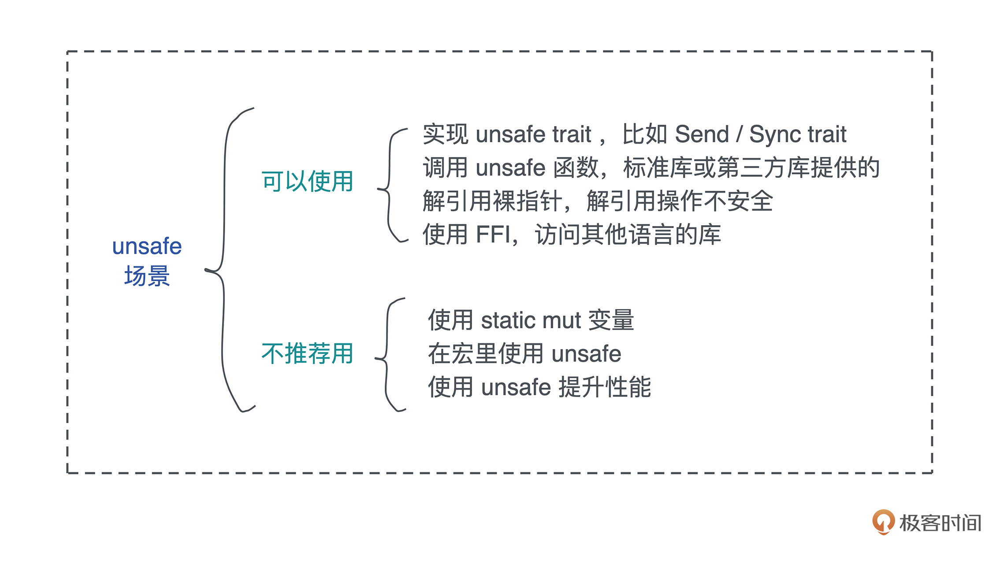

- 00 开篇词 让Rust成为你的下一门主力语言.md.html
- 01 内存：值放堆上还是放栈上，这是一个问题.md.html
- 02 串讲：编程开发中，那些你需要掌握的基本概念.md.html
- 03 初窥门径：从你的第一个Rust程序开始！.md.html
- 04 get hands dirty：来写个实用的CLI小工具.md.html
- 05 get hands dirty：做一个图片服务器有多难？.md.html
- 06 get hands dirty：SQL查询工具怎么一鱼多吃？.md.html
- 07 所有权：值的生杀大权到底在谁手上？.md.html
- 08 所有权：值的借用是如何工作的？.md.html
- 09 所有权：一个值可以有多个所有者么？.md.html
- 10 生命周期：你创建的值究竟能活多久？.md.html
- 11 内存管理：从创建到消亡，值都经历了什么？.md.html
- 12 类型系统：Rust的类型系统有什么特点？.md.html
- 13 类型系统：如何使用trait来定义接口？.md.html
- 14 类型系统：有哪些必须掌握的trait？.md.html
- 15 数据结构：这些浓眉大眼的结构竟然都是智能指针？.md.html
- 16 数据结构：Vec_T_、&[T]、Box_[T]_ ，你真的了解集合容器么？.md.html
- 17 数据结构：软件系统核心部件哈希表，内存如何布局？.md.html
- 18 错误处理：为什么Rust的错误处理与众不同？.md.html
- 19 闭包：FnOnce、FnMut和Fn，为什么有这么多类型？.md.html
- 20 4 Steps ：如何更好地阅读Rust源码？.md.html
- 21 阶段实操（1）：构建一个简单的KV server-基本流程.md.html
- 22 阶段实操（2）：构建一个简单的KV server-基本流程.md.html
- 23 类型系统：如何在实战中使用泛型编程？.md.html
- 24 类型系统：如何在实战中使用trait object？.md.html
- 25 类型系统：如何围绕trait来设计和架构系统？.md.html
- 26 阶段实操（3）：构建一个简单的KV server-高级trait技巧.md.html
- 27 生态系统：有哪些常有的Rust库可以为我所用？.md.html
- 28 网络开发（上）：如何使用Rust处理网络请求？.md.html
- 29 网络开发（下）：如何使用Rust处理网络请求？.md.html
- 30 Unsafe Rust：如何用C++的方式打开Rust？.md.html
- 31 FFI：Rust如何和你的语言架起沟通桥梁？.md.html
- 32 实操项目：使用PyO3开发Python3模块.md.html
- 33 并发处理（上）：从atomics到Channel，Rust都提供了什么工具？.md.html
- 34 并发处理（下）：从atomics到Channel，Rust都提供了什么工具？.md.html
- 35 实操项目：如何实现一个基本的MPSC channel？.md.html
- 36 阶段实操（4）：构建一个简单的KV server-网络处理.md.html
- 37 阶段实操（5）：构建一个简单的KV server-网络安全.md.html
- 38 异步处理：Future是什么？它和async_await是什么关系？.md.html
- 39 异步处理：async_await内部是怎么实现的？.md.html
- 40 异步处理：如何处理异步IO？.md.html
- 41 阶段实操（6）：构建一个简单的KV server-异步处理.md.html
- 42 阶段实操（7）：构建一个简单的KV server-如何做大的重构？.md.html
- 43 生产环境：真实世界下的一个Rust项目包含哪些要素？.md.html
- 44 数据处理：应用程序和数据如何打交道？.md.html
- 45 阶段实操（8）：构建一个简单的KV server-配置_测试_监控_CI_CD.md.html
- 46 软件架构：如何用Rust架构复杂系统？.md.html
- 加餐 Rust2021版次问世了！.md.html
- 加餐 代码即数据：为什么我们需要宏编程能力？.md.html
- 加餐 宏编程（上）：用最“笨”的方式撰写宏.md.html
- 加餐 宏编程（下）：用 syn_quote 优雅地构建宏.md.html
- 加餐 愚昧之巅：你的Rust学习常见问题汇总.md.html
- 加餐 期中测试：参考实现讲解.md.html
- 加餐 期中测试：来写一个简单的grep命令行.md.html
- 加餐 这个专栏你可以怎么学，以及Rust是否值得学？.md.html
- 大咖助场 开悟之坡（上）：Rust的现状、机遇与挑战.md.html
- 大咖助场 开悟之坡（下）：Rust的现状、机遇与挑战.md.html
- 特别策划 学习锦囊（一）：听听课代表们怎么说.md.html
- 特别策划 学习锦囊（三）：听听课代表们怎么说.md.html
- 特别策划 学习锦囊（二）：听听课代表们怎么说.md.html
- 用户故事 绝望之谷：改变从学习开始.md.html
- 用户故事 语言不仅是工具，还是思维方式.md.html
- 结束语 永续之原：Rust学习，如何持续精进？.md.html
- 捐赠
30 Unsafe Rust：如何用C++的方式打开Rust？
你好，我是陈天。
到目前为止，我们撰写的代码都在 Rust 精心构造的内存安全的国度里做一个守法好公民。通过遵循所有权、借用检查、生命周期等规则，我们自己的代码一旦编译通过，就相当于信心满满地向全世界宣布：这个代码是安全的！
然而，安全的 Rust 并不能适应所有的使用场景。
首先，为了内存安全，Rust 所做的这些规则往往是普适性的，编译器会把一切可疑的行为都严格地制止掉。可是，这种一丝不苟的铁面无情往往会过于严苛，导致错杀。
就好比“屋子的主人只会使用钥匙开门，如果一个人尝试着撬门，那一定是坏人”，正常情况下，这个逻辑是成立的，所有尝试撬门的小偷，都会被抓获（编译错误）；然而，有时候主人丢了钥匙，不得不请开锁匠开门（unsafe code），此时，是正常的诉求，是可以网开一面的。
其次，无论 Rust 将其内部的世界构建得多么纯粹和完美，它总归是要跟不纯粹也不完美的外界打交道，无论是硬件还是软件。
计算机硬件本身是 unsafe 的，比如操作 IO 访问外设，或者使用汇编指令进行特殊操作（操作 GPU或者使用 SSE 指令集）。这样的操作，编译器是无法保证内存安全的，所以我们需要 unsafe 来告诉编译器要法外开恩。
同样的，当 Rust 要访问其它语言比如 C/C++ 的库，因为它们并不满足 Rust 的安全性要求，这种跨语言的 FFI（Foreign Function Interface），也是 unsafe 的。
这两种使用 unsafe Rust 的方式是不得而为之，所以情有可原，是我们需要使用 unsafe Rust 的主要原因。
还有一大类使用 unsafe Rust 纯粹是为了性能。比如略过边界检查、使用未初始化内存等。这样的 unsafe 我们要尽量不用，除非通过 benchmark 发现用 unsafe 可以解决某些性能瓶颈，否则使用起来得不偿失。因为，在使用 unsafe 代码的时候，我们已经把 Rust 的内存安全性，降低到了和 C++ 同等的水平。
可以使用 unsafe 的场景
好，在了解了为什么需要 unsafe Rust 之后，我们再来看看在日常工作中，都具体有哪些地方会用到 unsafe Rust。
我们先看可以使用、也推荐使用 unsafe 的场景，根据重要/常用程度，会依次介绍：实现 unsafe trait，主要是 Send/Sync 这两个 trait、调用已有的 unsafe 接口、对裸指针做解引用，以及使用 FFI。
实现 unsafe trait
Rust 里，名气最大的 unsafe 代码应该就是 Send/Sync 这两个 trait 了：
pub unsafe auto trait Send {}
pub unsafe auto trait Sync {}
相信你应该对这两个 trait 非常了解了，但凡遇到和并发相关的代码，尤其是接口的类型声明时，少不了要使用 Send/Sync 来约束。我们也知道，绝大多数数据结构都实现了 Send/Sync，但有一些例外，比如 Rc/RefCell /裸指针等。
因为 Send/Sync 是 auto trait，所以大部分情况下，你自己的数据结构不需要实现 Send/Sync，然而，当你在数据结构里使用裸指针时，因为裸指针是没有实现 Send/Sync 的，连带着你的数据结构也就没有实现 Send/Sync。但很可能你的结构是线程安全的，你也需要它线程安全。
此时，如果你可以保证它能在线程中安全地移动，那可以实现 Send；如果可以保证它能在线程中安全地共享，也可以去实现 Sync。之前我们讨论过的 Bytes 就在使用裸指针的情况下实现了 Send/Sync：
pub struct Bytes {
ptr: *const u8,
len: usize,
// inlined "trait object"
data: AtomicPtr<()>,
vtable: &'static Vtable,
}
// Vtable must enforce this behavior
unsafe impl Send for Bytes {}
unsafe impl Sync for Bytes {}
但是，在实现 Send/Sync 的时候要特别小心，如果你无法保证数据结构的线程安全，错误实现 Send/Sync之后，会导致程序出现莫名其妙的还不太容易复现的崩溃。
比如下面的代码，强行为 Evil 实现了 Send，而 Evil 内部携带的 Rc 是不允许实现 Send 的。这段代码通过实现 Send 而规避了 Rust 的并发安全检查，使其可以编译通过（代码）：
use std::{cell::RefCell, rc::Rc, thread};
#[derive(Debug, Default, Clone)]
struct Evil {
data: Rc<RefCell<usize>>,
}
// 为 Evil 强行实现 Send，这会让 Rc 整个紊乱
unsafe impl Send for Evil {}
fn main() {
let v = Evil::default();
let v1 = v.clone();
let v2 = v.clone();
let t1 = thread::spawn(move || {
let v3 = v.clone();
let mut data = v3.data.borrow_mut();
*data += 1;
println!("v3: {:?}", data);
});
let t2 = thread::spawn(move || {
let v4 = v1.clone();
let mut data = v4.data.borrow_mut();
*data += 1;
println!("v4: {:?}", data);
});
t2.join().unwrap();
t1.join().unwrap();
let mut data = v2.data.borrow_mut();
*data += 1;
println!("v2: {:?}", data);
}
然而在运行的时候，有一定的几率出现崩溃：
❯ cargo run --example rc_send
v4: 1
v3: 2
v2: 3
❯ cargo run --example rc_send
v4: 1
thread '<unnamed>' panicked at 'already borrowed: BorrowMutError', examples/rc_send.rs:18:32
note: run with `RUST_BACKTRACE=1` environment variable to display a backtrace
thread 'main' panicked at 'called `Result::unwrap()` on an `Err` value: Any { .. }', examples/rc_send.rs:31:15
所以，如果你没有十足的把握，不宜胡乱实现 Send/Sync。
既然我们提到了 unsafe trait，你也许会好奇，什么 trait 会是 unsafe 呢？除了 Send/Sync 外，还会有其他 unsafe trait 么？当然会有。
任何 trait，只要声明成 unsafe，它就是一个 unsafe trait。而一个正常的 trait 里也可以包含 unsafe 函数，我们看下面的示例（代码）：
// 实现这个 trait 的开发者要保证实现是内存安全的
unsafe trait Foo {
fn foo(&self);
}
trait Bar {
// 调用这个函数的人要保证调用是安全的
unsafe fn bar(&self);
}
struct Nonsense;
unsafe impl Foo for Nonsense {
fn foo(&self) {
println!("foo!");
}
}
impl Bar for Nonsense {
unsafe fn bar(&self) {
println!("bar!");
}
}
fn main() {
let nonsense = Nonsense;
// 调用者无需关心 safety
nonsense.foo();
// 调用者需要为 safety 负责
unsafe { nonsense.bar() };
}
可以看到，unsafe trait 是对 trait 的实现者的约束，它告诉 trait 的实现者：实现我的时候要小心，要保证内存安全，所以实现的时候需要加 unsafe 关键字。
但 unsafe trait 对于调用者来说，可以正常调用，不需要任何 unsafe block，因为这里的 safety 已经被实现者保证了，毕竟如果实现者没保证，调用者也做不了什么来保证 safety，就像我们使用 Send/Sync 一样。
而unsafe fn 是函数对调用者的约束，它告诉函数的调用者：如果你胡乱使用我，会带来内存安全方面的问题，请妥善使用，所以调用 unsafe fn 时，需要加 unsafe block 提醒别人注意。
再来看一个实现和调用都是 unsafe 的 trait：GlobalAlloc。
下面这段代码在智能指针的[那一讲]中我们见到过，通过 GlobalAlloc 我们可以实现自己的内存分配器。因为内存分配器对内存安全的影响很大，所以实现者需要保证每个实现都是内存安全的。同时，alloc/dealloc 这样的方法，使用不正确的姿势去调用，也会发生内存安全的问题，所以这两个方法也是 unsafe 的：
use std::alloc::{GlobalAlloc, Layout, System};
struct MyAllocator;
unsafe impl GlobalAlloc for MyAllocator {
unsafe fn alloc(&self, layout: Layout) -> *mut u8 {
let data = System.alloc(layout);
eprintln!("ALLOC: {:p}, size {}", data, layout.size());
data
}
unsafe fn dealloc(&self, ptr: *mut u8, layout: Layout) {
System.dealloc(ptr, layout);
eprintln!("FREE: {:p}, size {}", ptr, layout.size());
}
}
#[global_allocator]
static GLOBAL: MyAllocator = MyAllocator;
好，unsafe trait 就讲这么多，如果你想了解更多详情，可以看 Rust RFC2585。如果你想看一个完整的 unsafe trait 定义到实现的过程，可以看 BufMut。
调用已有的 unsafe 函数
接下来我们讲 unsafe 函数。有些时候，你会发现，标准库或者第三方库提供给你的函数本身就标明了 unsafe。比如我们之前为了打印 HashMap 结构所使用的 transmute 函数：
use std::collections::HashMap;
fn main() {
let map = HashMap::new();
let mut map = explain("empty", map);
map.insert(String::from("a"), 1);
explain("added 1", map);
}
// HashMap 结构有两个 u64 的 RandomState，然后是四个 usize，
// 分别是 bucket_mask, ctrl, growth_left 和 items
// 我们 transmute 打印之后，再 transmute 回去
fn explain<K, V>(name: &str, map: HashMap<K, V>) -> HashMap<K, V> {
let arr: [usize; 6] = unsafe { std::mem::transmute(map) };
println!(
"{}: bucket_mask 0x{:x}, ctrl 0x{:x}, growth_left: {}, items: {}",
name, arr[2], arr[3], arr[4], arr[5]
);
// 因为 std:mem::transmute 是一个 unsafe 函数，所以我们需要 unsafe
unsafe { std::mem::transmute(arr) }
}
前面已经说过，要调用一个 unsafe 函数，你需要使用 unsafe block 把它包裹起来。这相当于在提醒大家，注意啊，这里有 unsafe 代码！
另一种调用 unsafe 函数的方法是定义 unsafe fn，然后在这个 unsafe fn 里调用其它 unsafe fn。
如果你阅读一些标准库的代码会发现，有时候同样的功能，Rust 会提供 unsafe 和 safe 的版本，比如，把 &[u8] 里的数据转换成字符串：
// safe 版本，验证合法性，如果不合法返回错误
pub fn from_utf8(v: &[u8]) -> Result<&str, Utf8Error> {
run_utf8_validation(v)?;
// SAFETY: Just ran validation.
Ok(unsafe { from_utf8_unchecked(v) })
}
// 不验证合法性，调用者需要确保 &[u8] 里都是合法的字符
pub const unsafe fn from_utf8_unchecked(v: &[u8]) -> &str {
// SAFETY: the caller must guarantee that the bytes `v` are valid UTF-8.
// Also relies on `&str` and `&[u8]` having the same layout.
unsafe { mem::transmute(v) }
}
安全的 str::from_utf8() 内部做了一些检查后，实际调用了 str::from_utf8_unchecked()。如果我们不需要做这一层检查，这个调用可以高效很多（可能是一个量级的区别），因为 unsafe 的版本就只是一个类型的转换而已。
那么这样有两个版本的接口，我们该如何调用呢？
如果你并不是特别明确，一定要调用安全的版本，不要为了性能的优势而去调用不安全的版本。如果你清楚地知道，&[u8] 你之前已经做过检查，或者它本身就来源于你从 &str 转换成的 &[u8]，现在只不过再转换回去，那可以调用不安全的版本，并在注释中注明为什么这里是安全的。
对裸指针解引用
unsafe trait 和 unsafe fn 的使用就了解到这里啦，我们再看裸指针。很多时候，如果需要进行一些特殊处理，我们会把得到的数据结构转换成裸指针，比如刚才的 Bytes。
裸指针在生成的时候无需 unsafe，因为它并没有内存不安全的操作，但裸指针的解引用操作是不安全的，潜在有风险，它也需要使用 unsafe 来明确告诉编译器，以及代码的阅读者，也就是说要使用 unsafe block 包裹起来。
下面是一段对裸指针解引用的操作（代码）：
fn main() {
let mut age = 18;
// 不可变指针
let r1 = &age as *const i32;
// 可变指针
let r2 = &mut age as *mut i32;
// 使用裸指针，可以绕过 immutable/mutable borrow rule
// 然而，对指针解引用需要使用 unsafe
unsafe {
println!("r1: {}, r2: {}", *r1, *r2);
}
}
fn immutable_mutable_cant_coexist() {
let mut age = 18;
let r1 = &age;
// 编译错误
let r2 = &mut age;
println!("r1: {}, r2: {}", *r1, *r2);
}
我们可以看到，使用裸指针，可变指针和不可变指针可以共存，不像可变引用和不可变引用无法共存。这是因为裸指针的任何对内存的操作，无论是 ptr::read/ptr::write，还是解引用，都是unsafe 的操作，所以只要读写内存，裸指针的使用者就需要对内存安全负责。
你也许会觉得奇怪，这里也没有内存不安全的操作啊，为啥需要 unsafe 呢？是的，虽然在这个例子里，裸指针来源于一个可信的内存地址，所有的代码都是安全的，但是，下面的代码就是不安全的，会导致 segment fault（代码）：
fn main() {
// 裸指针指向一个有问题的地址
let r1 = 0xdeadbeef as *mut u32;
println!("so far so good!");
unsafe {
// 程序崩溃
*r1 += 1;
println!("r1: {}", *r1);
}
}
这也是为什么我们在撰写 unsafe Rust 的时候，要慎之又慎，并且在 unsafe 代码中添加足够的注释来阐述为何你觉得可以保证这段代码的安全。
使用裸指针的时候，大部分操作都是 unsafe 的（下图里表三角惊叹号的）：- - 如果你对此感兴趣，可以查阅 std::ptr 的文档。
使用 FFI
最后一种可以使用 unsafe 的地方是 FFI。
当 Rust 要使用其它语言的能力时，Rust 编译器并不能保证那些语言具备内存安全，所以和第三方语言交互的接口，一律要使用 unsafe，比如，我们调用 libc 来进行 C 语言开发者熟知的 malloc/free（代码）：
use std::mem::transmute;
fn main() {
let data = unsafe {
let p = libc::malloc(8);
let arr: &mut [u8; 8] = transmute(p);
arr
};
data.copy_from_slice(&[1, 2, 3, 4, 5, 6, 7, 8]);
println!("data: {:?}", data);
unsafe { libc::free(transmute(data)) };
}
从代码中可以看到，所有的对 libc 函数的调用，都需要使用 unsafe block。下节课我们会花一讲的时间谈谈 Rust 如何做 FFI，到时候细讲。
不推荐的使用 unsafe 的场景
以上是我们可以使用 unsafe 的场景。还有一些情况可以使用 unsafe，但是，我并不推荐。比如处理未初始化数据、访问可变静态变量、使用 unsafe 提升性能。
虽然不推荐使用，但它们作为一种用法，在标准库和第三方库中还是会出现，我们即便自己不写，在遇到的时候，也最好能够读懂它们。
访问或者修改可变静态变量
首先是可变静态变量。之前的课程中，我们见识过全局的 static 变量，以及使用 lazy_static 来声明复杂的 static 变量。然而之前遇到的 static 变量都是不可变的。
Rust 还支持可变的 static 变量，可以使用 static mut 来声明。
显而易见的是，全局变量如果可写，会潜在有线程不安全的风险，所以如果你声明 static mut 变量，在访问时，统统都需要使用 unsafe。以下的代码就使用了 static mut，并试图在两个线程中分别改动它。你可以感受到，这个代码的危险（代码）：
use std::thread;
static mut COUNTER: usize = 1;
fn main() {
let t1 = thread::spawn(move || {
unsafe { COUNTER += 10 };
});
let t2 = thread::spawn(move || {
unsafe { COUNTER *= 10 };
});
t2.join().unwrap();
t1.join().unwrap();
unsafe { println!("COUNTER: {}", COUNTER) };
}
其实我们完全没必要这么做。对于上面的场景，我们可以使用 AtomicXXX 来改进：
use std::{
sync::atomic::{AtomicUsize, Ordering},
thread,
};
static COUNTER: AtomicUsize = AtomicUsize::new(1);
fn main() {
let t1 = thread::spawn(move || {
COUNTER.fetch_add(10, Ordering::SeqCst);
});
let t2 = thread::spawn(move || {
COUNTER
.fetch_update(Ordering::SeqCst, Ordering::SeqCst, |v| Some(v * 10))
.unwrap();
});
t2.join().unwrap();
t1.join().unwrap();
println!("COUNTER: {}", COUNTER.load(Ordering::Relaxed));
}
有同学可能会问：如果我的数据结构比较复杂，无法使用 AtomicXXX 呢？
如果你需要定义全局的可变状态，那么，你还可以使用 Mutex
use lazy_static::lazy_static;
use std::{collections::HashMap, sync::Mutex, thread};
// 使用 lazy_static 初始化复杂的结构
lazy_static! {
// 使用 Mutex/RwLock 来提供安全的并发写访问
static ref STORE: Mutex<HashMap<&'static str, &'static [u8]>> = Mutex::new(HashMap::new());
}
fn main() {
let t1 = thread::spawn(move || {
let mut store = STORE.lock().unwrap();
store.insert("hello", b"world");
});
let t2 = thread::spawn(move || {
let mut store = STORE.lock().unwrap();
store.insert("goodbye", b"world");
});
t2.join().unwrap();
t1.join().unwrap();
println!("store: {:?}", STORE.lock().unwrap());
}
所以，我非常不建议你使用 static mut。任何需要 static mut 的地方，都可以用 AtomicXXX/Mutex/RwLock 来取代。千万不要为了一时之快，给程序种下长远的祸根。
在宏里使用 unsafe
虽然我们并没有介绍宏编程，但已经在很多场合使用过宏了，宏可以在编译时生成代码。
在宏中使用 unsafe，是非常危险的。
首先使用你的宏的开发者，可能压根不知道 unsafe 代码的存在；其次，含有 unsafe 代码的宏在被使用到的时候，相当于把 unsafe 代码注入到当前上下文中。在不知情的情况下，开发者到处调用这样的宏，会导致 unsafe 代码充斥在系统的各个角落，不好处理；最后，一旦 unsafe 代码出现问题，你可能都很难找到问题的根本原因。
以下是 actix_web 代码库中的 downcast_dyn 宏，你可以感受到本来就比较晦涩的宏，跟 unsafe 碰撞在一起，那种令空气都凝固了的死亡气息：
// Generate implementation for dyn $name
macro_rules! downcast_dyn {
($name:ident) => {
/// A struct with a private constructor, for use with
/// `__private_get_type_id__`. Its single field is private,
/// ensuring that it can only be constructed from this module
#[doc(hidden)]
#[allow(dead_code)]
pub struct PrivateHelper(());
impl dyn $name + 'static {
/// Downcasts generic body to a specific type.
#[allow(dead_code)]
pub fn downcast_ref<T: $name + 'static>(&self) -> Option<&T> {
if self.__private_get_type_id__(PrivateHelper(())).0
== std::any::TypeId::of::<T>()
{
// SAFETY: external crates cannot override the default
// implementation of `__private_get_type_id__`, since
// it requires returning a private type. We can therefore
// rely on the returned `TypeId`, which ensures that this
// case is correct.
unsafe { Some(&*(self as *const dyn $name as *const T)) }
} else {
None
}
}
/// Downcasts a generic body to a mutable specific type.
#[allow(dead_code)]
pub fn downcast_mut<T: $name + 'static>(&mut self) -> Option<&mut T> {
if self.__private_get_type_id__(PrivateHelper(())).0
== std::any::TypeId::of::<T>()
{
// SAFETY: external crates cannot override the default
// implementation of `__private_get_type_id__`, since
// it requires returning a private type. We can therefore
// rely on the returned `TypeId`, which ensures that this
// case is correct.
unsafe { Some(&mut *(self as *const dyn $name as *const T as *mut T)) }
} else {
None
}
}
}
};
}
所以，除非你是一个 unsafe 以及宏编程的老手，否则不建议这么做。
使用 unsafe 提升性能
unsafe 代码在很多 Rust 基础库中有大量的使用，比如哈希表那一讲提到的 hashbrown，如果看它的代码库，你会发现一共有 222 处使用 unsafe：
hashbrown on master
❯ ag "unsafe" | wc -l
222
这些 unsafe 代码，大多是为了性能而做的妥协。
比如下面的代码就使用了 SIMD 指令来加速处理：
unsafe {
// A byte is EMPTY or DELETED iff the high bit is set
BitMask(x86::_mm_movemask_epi8(self.0) as u16)
}
然而，如果你不是在撰写非常基础的库，并且这个库处在系统的关键路径上，我也很不建议使用 unsafe 来提升性能。
性能，是一个系统级的问题。在你没有解决好架构、设计、算法、网络、存储等其他问题时，就来抠某个函数的实现细节的性能，我认为是不妥的，尤其是试图通过使用 unsafe 代码，跳过一些检查来提升性能。
要知道，好的算法和不好的算法可以有数量级上的性能差异。而有些时候，即便你能够使用 unsafe 让局部性能达到最优，但作为一个整体看的时候，这个局部的优化可能根本没有意义。
所以，如果你用 Rust 做 Web 开发、做微服务、做客户端，很可能都不需要专门撰写 unsafe 代码来提升性能。
撰写 unsafe 代码
了解了unsafe可以使用和不建议使用的具体场景，最后，我们来写一段小小的代码，看看如果实际工作中，遇到不得不写 unsafe 代码时，该怎么做。
需求是要实现一个 split() 函数，得到一个字符串 s，按照字符 sep 第一次出现的位置，把字符串 s 截成前后两个字符串。这里，当找到字符 sep 的位置 pos 时，我们需要使用一个函数，得到从字符串开头到 pos 的子串，以及从字符 sep 之后到字符串结尾的子串。
要获得这个子串，Rust 有安全的 get 方法，以及不安全的 get_unchecked 方法。正常情况下，我们应该使用 get() 方法，但这个实例，我们就强迫自己使用 get_unchecked() 来跳过检查。
先看这个函数的安全性要求：- - 在遇到 unsafe 接口时，我们都应该仔细阅读其安全须知，然后思考如何能满足它。如果你自己对外提供 unsafe 函数，也应该在文档中详细地给出类似的安全须知，告诉调用者，怎么样调用你的函数才算安全。
对于 split 的需求，我们完全可以满足 get_unchecked() 的安全要求，以下是实现（代码）：
fn main() {
let mut s = "我爱你！中国".to_string();
let r = s.as_mut();
if let Some((s1, s2)) = split(r, '！') {
println!("s1: {}, s2: {}", s1, s2);
}
}
fn split(s: &str, sep: char) -> Option<(&str, &str)> {
let pos = s.find(sep);
pos.map(|pos| {
let len = s.len();
let sep_len = sep.len_utf8();
// SAFETY: pos 是 find 得到的，它位于字符的边界处，同样 pos + sep_len 也是如此
// 所以以下代码是安全的
unsafe { (s.get_unchecked(0..pos), s.get_unchecked(pos + sep_len..len)) }
})
}
同样的，在撰写 unsafe 代码调用别人的 unsafe 函数时，我们一定要用注释声明代码的安全性，这样，别人在阅读我们的代码时，可以明白为什么此处是安全的、是符合这个 unsafe 函数的预期的。
小结
unsafe 代码，是 Rust 这样的系统级语言必须包含的部分，当 Rust 跟硬件、操作系统，以及其他语言打交道，unsafe 是必不可少的。- 
当我们使用 unsafe 撰写 Rust 代码时，要格外小心，因为此时编译器已经把内存安全的权杖完全交给了你，在打开 unsafe block 的那一刻，你会获得 C/C++ 代码般的自由度，但这个自由背后的代价就是安全性上的妥协。
好的 unsafe 代码，足够短小、精简，只包含不得不包含的内容。unsafe 代码是开发者对编译器和其它开发者的一种庄重的承诺：我宣誓，这段代码是安全的。
今天讲的内容里的很多代码都是反面教材，并不建议你大量使用，尤其是初学者。那为什么我们还要讲 unsafe 代码呢？老子说：知其雄守其雌。我们要知道 Rust 的阴暗面（unsafe rust），才更容易守得住它光明的那一面（safe rust）。
这一讲了解了 unsafe 代码的使用场景，希望你日后，在阅读 unsafe 代码的时候，不再心里发怵；同时，在撰写 unsafe 代码时，能够对其足够敬畏。
思考题
上文中，我们使用 s.get_unchecked() 来获取一个子字符串，通过使用合适的 pos，可以把一个字符串 split 成两个。如果我们需要一个 split_mut 接口怎么实现？
fn split_mut(s: &mut str, sep: char) -> (&mut str, &mut str)
你可以尝试使用 get_unchecked_mut()，看看代码能否编译通过？想想为什么？然后，试着自己构建 unsafe 代码实现一下？
小提示，你可以把 s 先转换成裸指针，然后再用 std::slice::from_raw_parts_mut() 通过一个指针和一个长度，构建出一个 slice（还记得 &[u8] 其实内部就是一个 ptr + len 么？）。然后，再通过 std::str::from_utf8_unchecked_mut() 构建出 &mut str。
感谢你的收听，今天你完成了Rust学习的第30次打卡。如果你觉得有收获，也欢迎你分享给身边的朋友，邀他一起讨论。我们下节课见～
© 2019 - 2023 Liangliang Lee. Powered by gin and hexo-theme-book.